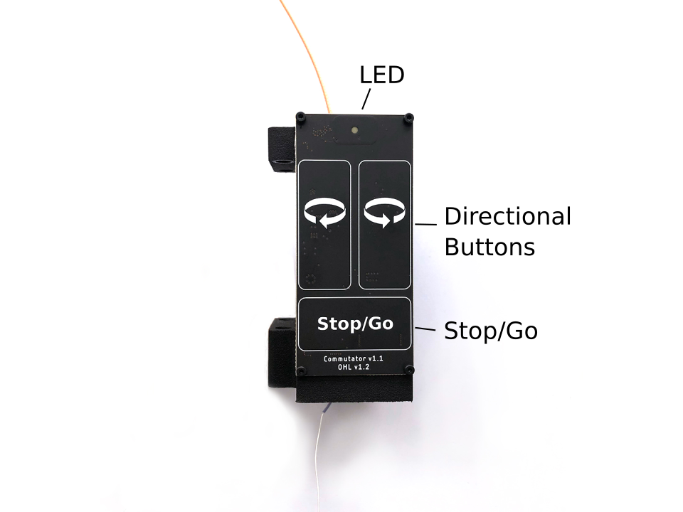

Usage¶
The commutator is powered over USB. It can be controlled using the buttons on the front panel or by receiving commands from the computer over USB.
LED¶
The LED tells you about the commutator state:
Flashing red (Charging): commutator is charging internal super-capacitors. All controls and motor operation are locked. Wait until this process completes to use the device. It can take up to 30 seconds.
Solid red (Disabled): commutator is disabled. Motor is turned off and will not turn or respond to button presses or external commands.
Green (Enabled): commutator is enabled and permits both remote and manual (button) turn control. Buttons take precedence over remote commands.
The LED can be turned off by pressing and holding it > 500 msec. It can be turned back on by pressing it.
Buttons¶
The front panel has four buttons.
- Stop/Go
Press to toggle commutator enable/disable.
Disabled (LED is red): All motor output will halt instantly, and motor driver is powered down. Pressing directional buttons in the stopped state will not work. All target turns provided via remote calls will be cleared, such that re-enabling the motor will not result in the commutator re-engaging an old target position. In this state, pressing and holding the Stop/Go button for > 0.5 second, or sending the approriate remote command will enable the device.
Enabled (LED green): When in the enabled state, the LED will be green and the motor can be turned via button presses or RPCs . In this state, pressing the Stop/Go button will instantly disable the device.
- Directional
Press to manually control the motor rotation in the direction indicated on each button when the commutator is Enabled. These inputs take precedence over and override ongoing remote motor control. When pressed, all target turns provided via remote control will be cleared, such that releasing them will not result in the commutator re-engaging an old target position. Remote commands sent when a button is being pressed are ignored.
- LED
Pressing the LED turns it off (e.g for cases where it presents an unwanted visual stimulus). Pressing it again turns it back on.
Remote control interface¶
When manual buttons are not being pressed, the commutator accepts JSON-encoded commands over its serial interface. Here are examples of all commands that can be sent:
{enable : true} // Enable commutator (default = false)
{led : false} // Turn off RGB LED (default = true)
{speed : 250} // Set turn speed to 250 RPM (default = 50 RPM, valid ∈ (0, 500] RPM)
{turn : 1.1} // 1.1 turns CW
{turn : -1.1} // 1.1 turns CCW
// Example multi-command. Any combo can be used.
// In this case:
// 1. Turn LED off
// 1. Set speed to 25 RPM
// 2. Excecute 1.1 turns CC
// Ordering of commands does not matter
{led: false, speed: 25, turn : -1.1}
The communator state can be read using the {print:} command which will
return a JSON object containing control and motor parameters.
Note
Have a look at the Manual Commutator Workflow for a basic example of how the commutator can be controlled from the computer. Additionally, the Headstage-64 Workflow shows how the commutator can be controlled using the headstage IMU for torque-free commutation during free-moving experiments.
Saving settings¶
All control and speed parameters, whether changed via the remote or manual interface, are saved in non-volatile memory each time they are changed. The device will start in the same state it was last used.
Firmware¶
The controller firmware runs on a Teensy 3.2. To compile this firmware and program the microcontroller, you need the following dependencies:
The firmware can be uploaded to the device using the Arduino IDE.
Note
You will need to add the Teensyduino add-on to the Arduino IDE to program
the Teensy. When installing Teensyduino, you should opt to install all of the
bundled libraries as well. This takes care of installing AccelStepper
library rather than having to install it manually. ArduinoJSON can be
installed through the Arduino IDE’s package manager.